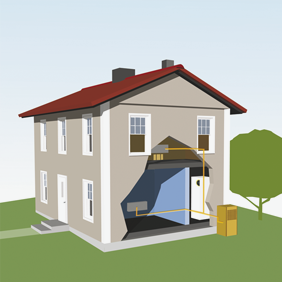
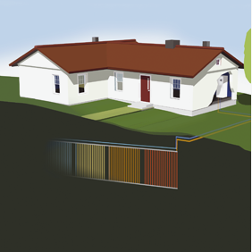
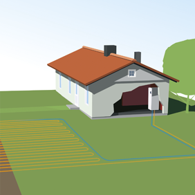
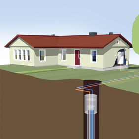
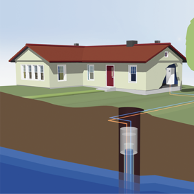
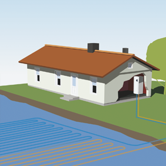

Geotermální energie
Obecné informace
- přirozený projev tepelné energie zemského jádra s původem ve zbytkovém teplu Země
- vzniká rozpadem radioaktivních látek či působením slapových sil
- zahřívá podzemní horniny a vody na různou teplotu v závislosti na hloubce a geologických poměrech v daném místě
- projevuje se erupcí sopek, gejzíry, horskými prameny nebo parními výrony
- užívá se k výrobě elektřiny v geotermálních elektrárnách či k vytápění
- k výrobě elektřiny se primárně používají vysokoteplotní zdroje (zbytkové teplo se může využít pro vytápění)
- zdroje s nižší teplotou slouží k přímému využívání geotermální energie a jsou dvojího typu:
- první typ je založen na extrakci tepla z podzemní vody a půdy nebo horniny o relativně stabilní teplotě v malých hloubkách (zhruba do hloubky 400 metrů) - k využití tohoto tepla se nejčastěji používají tepelná čerpadla
- druhý typ přímého zdroje využívá nízké až středně vysoké teploty v rozsahu od 30 °C až přes 100 °C většinou z hloubky pod 400 metrů
Typy tepelných čerpadel
- první typ je založen na principu získávání tepla ze vzduchu
- druhý typ je založen na získávání tepla ze země
- třetí typ je založen na získávání tepla z vody
Teplo ze vzduchu

Model teplného čerpadla vzduch/voda – venkovní vzduch

Model teplného čerpadla vzduch/voda – odpadní větrací vzduch
Teplo ze země

Teplné čerpadlo země/voda – plocha

Tepelné čerpadlo země/voda – vrt

Tepelné čerpadlo voda/voda – studny

Teplná čerpadla země/voda – vodní plochy